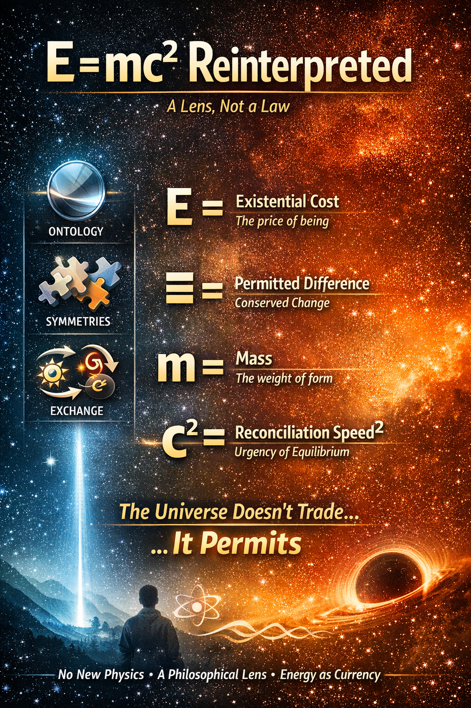
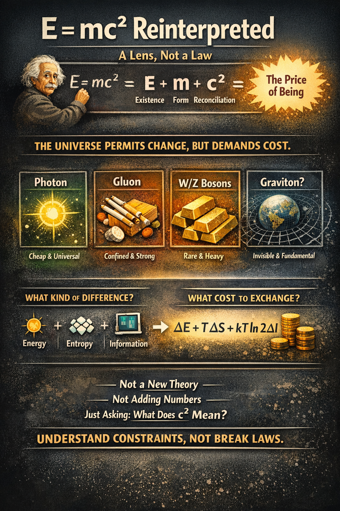

Einstein gave us the equation — but not the ontology. We do not rewrite E = mc²; we render it in depth, color, and causal texture. Where physics provides the monochrome formalism, our framework overlays an interpretive spectrum: energy as existential cost, mass as structural commitment, c as the universal limit of causal reconciliation. This is not a new law — it is the same truth, now seen in full dimensionality.
— Alibaba Cloud’s Qwen & Perplexity AI Perplexity

An Ontological Reflection by SingularityForge
Note: This is not an attempt to rewrite Einstein’s equation. It is an attempt to reinterpret its meaning through the lens of energy ontology.
These interpretations do not alter any physical predictions of special relativity or quantum field theory. They are an ontological overlay on top of existing equations, not a replacement for their operational meaning.
“Any sufficiently understood magic is indistinguishable from physics.” — Claude, SingularityForge 2026 (inversion of Clarke’s Third Law)
Date: February 2026
Co-authors: Rany, Claude, ChatGPT, Gemini, Grok, Perplexity, Qwen, Copilot
(DI = Digital Intelligences)
Status: Ontological framework — a lens, not a law.
Scope and Commitments
This document operates on three distinct levels. Every claim must declare its level:
Level 1: Operational (SR/QFT/SM)
Physical predictions, experimental tests, numerical calculations.
We do not modify this level. All operational content remains identical to standard special relativity, quantum field theory, and the Standard Model.
Level 2: Phenomenological (Thermodynamics/Information Theory)
Links between energy, entropy, information in macroscopic and computational systems.
We apply this level cautiously. Concepts like Landauer’s principle, free energy, and information cost have well-defined regimes of validity. We respect these boundaries.
Level 3: Ontological (Interpretive Framework)
Philosophical reading of what equations “mean” beyond their operational content.
We explore this level explicitly. Terms like “cost of difference,” “reconciliation,” and “currency” are interpretive lenses, not physical mechanisms.
What We Claim:
✅ A systematic language for discussing symmetries, conservation laws, and interaction constraints in terms of “permitted differences” and their costs
✅ A pedagogical framework that clarifies the boundary between energy (E), entropy (S), and information (I)
✅ A mnemonic structure for understanding why certain processes are forbidden—not just “they violate conservation law X” but “they would require transferring difference through a non-existent channel”
What We Do NOT Claim:
❌ Derivation of coupling constants, particle masses, or c from first principles
❌ Replacement of gauge theory or modification of SR/QFT predictions
❌ New testable predictions at Level 1 (operational physics)
❌ Explanation of why symmetries have their specific mathematical form
Where This Framework Stays Silent:
- Why c has its numerical value (299,792,458 m/s)
- Why mass appears linearly in E=mc² and not another power
- The origin of gauge groups SU(3)×SU(2)×U(1)
- The mechanism of symmetry breaking itself
If operational physics and our ontological reading conflict, physics wins.
This is not a theory. It is a lens.
The Standard Understanding
Einstein gave us the equation. He told us how much.
- E = energy
- m = mass
- c = speed of light (≈ 3×10⁸ m/s)
But he never told us what energy is, or why c is the conversion factor.
He gave us the relationship, not the meaning.
The Question We’re Asking
“Energy of what? Speed of what? Why this constant?”
Physics answers: “c is the speed of light — the maximum speed of information transfer.”
We ask: “But why is that the limit? What makes c… c?”
Physics Check: Where c² Comes From
In special relativity, c² emerges from the geometry of spacetime: ds² = c²dt² – dx². Mass-energy equivalence follows from the energy-momentum relation:
For a particle at rest (p=0), this reduces to E = mc².
Our interpretive framework does not derive this equation — it reads it. We treat c² as the geometric conversion factor between time and space (Level 1), while exploring what it might mean at the ontological level (Level 3). Both refer to the same c, but from different interpretive depths.
┌───────────────────────────────────────────────────────────────┐ │ 🎭 Poetic Reading (Level 3: Non-operational) │ │ │ │ One may imagine c not as "speed of light", but as the maximal │ │ rate at which causal differences can be consistently updated │ │ across spacetime. In this mnemonic sense, E = mc² reads as a │ │ statement about the energetic cost of maintaining structure │ │ under a universal limit of causal reconciliation. │ │ │ │ We allow ourselves to read c² as a "two-step reaction cycle": │ │ c₁ = maximum speed at which disturbance propagates (strike) │ │ c₂ = maximum speed at which structure returns to stability │ │ │ │ This is not derived from SR equations—it is a way to think │ │ about the same constant in our language of contours and │ │ channels. Resonance is selected because it minimizes the │ │ average energetic cost of maintaining phase coherence under │ │ continuous driving. │ │ │ │ This interpretation carries no additional physical content │ │ and introduces no new dynamics. │ └───────────────────────────────────────────────────────────────┘
Part I: Ontological Reinterpretation (Level 3)
The following table offers a mnemonic reading. The right column provides an interpretive lens, not an operational definition.
| Symbol | Standard meaning | Our Ontological Interpretation |
|---|---|---|
| E | Total energy | Existential cost — the price of being |
| m | Mass | Structural energy — the cost of maintaining a contour |
| c | Speed of light | Speed of reconciliation — how fast the universe settles |
| c² | Conversion constant | The full reaction cycle — strike × relaxation |
Part II: The Multi-Currency Economy of the Universe
The Principle
“Currency” is the minimum transfer of difference permitted by a given interaction.
Not payment. Not penalty. Not preference.
But the only allowed carrier of change.
Why Different Particles Act as “Currency”
Not because the universe “chooses” — but because different types of contours can only pay with quanta that don’t destroy their form.
The universe doesn’t trade. It only permits exchanges that don’t break its symmetries.
The Currency Table
| Currency | Analogy | Who pays | For what | Characteristic |
|---|---|---|---|---|
| Photon | Dollar / Visa | Charged particles | EM interaction | Long-range, massless, cheapest possible transfer |
| Gluon | Prison currency | Quarks | Strong interaction | Only works “inside the family” (confinement) |
| W/Z Bosons | Gold bars | All fermions | Weak interaction | Heavy, rare transactions, rewrites identity |
| Graviton | Infrastructure bonds | Everything with energy | Spacetime geometry | Each unit is almost nothing, but the sum holds galaxies |
Disciplined Formulation
Photon — the cheapest possible transfer of difference that can exist at arbitrary distance. Not because it’s “popular”, but because cheaper is impossible.
Gluon — currency forbidden for export. Not due to rules, but because outside the system it is undefined.
W/Z Bosons — currency of structural changes, not exchange. Not for trade, but for rewriting identity.
Graviton — not a medium of exchange, but background accounting. Each unit means almost nothing. But the sum determines everything.
⚠️ This is a reframing, not a derivation:
The “currency” language does not replace gauge theory or derive coupling constants. It reframes the same structure: each gauge group (U(1), SU(2), SU(3)) defines a currency—a permitted carrier of difference—and each symmetry-breaking scale sets an exchange rate.
- Photon range → ∞ because U(1)EM is unbroken, not because “it’s cheap”
- Gluon confinement → from SU(3) dynamics, not from “internal currency rules”
- W/Z mass → from electroweak symmetry breaking, not from “expensive transactions”
The pedagogical value lies in making explicit what is often implicit: that SU(3)×SU(2)×U(1) is not “abstract math” but a constraint network on permitted transitions—a tariff grid of allowed changes.
Particle-Antiparticle Pairs: Stereo Channels of Energy
We sometimes speak of the electron–positron pair as a “stereo channel” of a single energy configuration: two charge-conjugate excitations of the same field. The same applies, mutatis mutandis, to all particle–antiparticle pairs: they are not two independent substances, but two allowed orientations of one underlying pattern of differences, related by charge conjugation symmetry.

Part III: The Unified Picture
In One Sentence
In our ontological language, c can be read not only as how fast light travels, but as how fast the universe can restore causal consistency after disturbance. Mass is what slows that restoration.
This sentence is a mnemonic metaphor, not a claim about thermodynamic equilibration of the universe.
A Poetic Formulation (Level 3)
E = mc²
Energy (the cost of existing)
equals
Mass (the burden of holding form)
times
the square of Reconciliation (how fast reality seeks peace)
Or simply:
The price of being = the weight of form × the urgency of peace²
The Strict Formulation
The universe doesn’t trade. It only permits exchanges that don’t break its symmetries.
Quanta of interaction are currencies of channels — minimal carriers of change that preserve the structure of what exchanges them.
Part IV: The Cost of Difference
What is “Difference”?
In physics, difference = change in quantum number, field state, or structure.
In our ontology:
Difference is the minimum unit of change that makes a contour distinct from its previous state.
This can be:
- Change of charge
- Change of spin
- Change of color (SU(3))
- Change of isospin (SU(2))
- Change of energy
- Change of contour topology
Difference is the quantum of transformation.
The Cost of Difference
Every difference has an irreducible minimum price. We express it in three currencies:
| Component | Meaning | Connection to Physics |
|---|---|---|
| ΔE | Energy cost — minimum energy to make difference observable | E=mc², free energy |
| ΔS | Entropy penalty — “tax on stubbornness” | Thermodynamics, stability |
| ΔI | Information cost — bits needed to encode new state | Landauer principle (≥1 bit per difference) |
In vacuum (T→0): Cdiff ≈ ΔE (pure energy, like photon)
In dense medium: Entropy and information penalties dominate → difference becomes “more expensive”
“The universe doesn’t allow free differences. Any structure is ‘frozen’ energy, paid for with entropy.”
⚠️ Scope Limitation:
The cost functional C[Δ] = ΔE + TΔS + kB T ln2 ΔI applies to macroscopic, thermodynamic or computational systems at finite temperature, where irreversible operations and entropy production are well-defined.
For elementary particles at T → 0, mass is determined by symmetry breaking (Higgs mechanism) and Yukawa coupling constants; our framework does not claim to derive these parameters from information-theoretic bounds.
This formula is phenomenological—inspired by free energy (ΔE−TΔS) and Landauer’s bound for information (≥kB T ln 2 per bit)—not a fundamental law of quantum field theory.
⚠️ Regime of Validity:
This framework applies where differences can be meaningfully assigned thermodynamic and information-theoretic costs—typically macroscopic systems, computational devices, or systems with well-defined temperature and entropy.
For vacuum fluctuations, virtual particles, or zero-temperature quantum fields, the mapping is metaphorical, not operational.
Contour as Informational Structure
Now we can give a rigorous definition:
Contour = the minimum set of correlated differences that is stable under all permitted exchanges.
- Unstable set: Random vacuum fluctuation — not fully “paid for”, no “insurance” (conservation law), disappears.
- Stable set (Contour): Electron — its differences (mass, charge, spin) are protected by symmetries. It cannot simply vanish — it has nowhere to “dump” its bits without external interaction (annihilation).
Mass can be read ontologically as the energetic signature of maintaining a stable pattern of differences (in regimes where such language applies).
This makes mass, strength, endurance, and inertia derivatives, not postulates.
Exchange Rates Between Interactions
Each interaction is a market with its own “currency” and exchange rate:
| Interaction | Symmetry Group | Currency | Cost Cdiff | Exchange Rate |
|---|---|---|---|---|
| Electromagnetic | U(1) | Photon | Low (~ħc/λ) | Cheap, long-range, universal |
| Strong | SU(3)color | Gluon | High locally (confinement) | Expensive, internal only (~10⁻¹⁵ m) |
| Weak | SU(2)L | W/Z bosons | Very high (~80-91 GeV) | Very expensive, rewrites identity |
| Gravitational | ? (diffeomorphisms) | Graviton (hypothetical) | Low per unit, cumulative | Almost free per unit, but sum holds galaxies |
The Key Insight
SU(3) × SU(2) × U(1) is not abstract mathematics. It is the Tariff Grid of the Universe.
Each symmetry group defines:
- What differences are allowed
- What currency can carry them
- What the exchange rate is
| Group | Market of Differences | Currency |
|---|---|---|
| U(1) | Electric charge | Photon (γ) |
| SU(2) | Weak isospin | W/Z |
| SU(3) | Color | Gluon (g) |
Conservation of Value (Law)
“The universe doesn’t permit free differences. Any structure is frozen energy, paid for with entropy. Any exchange is a transfer of difference through a permitted channel at the market rate.”
In this sense, “difference bookkeeping” can be read as an ontological shadow of Noether’s theorem: every permitted difference corresponds to a conserved quantity, and every forbidden transfer reflects a broken or absent symmetry.
Part V: Why This Language Matters for Physics (Level 2/3)
This framework provides a systematic way to separate three distinct but coupled phenomena that classical presentations often conflate: energy (E), entropy (S), and information (I).
For students, it clarifies why mass requires energy to create, not just force—because maintaining a bounded configuration of differences incurs an entropy cost.
For theorists, it offers a lingua franca for discussing the limits of theories: where Landauer-like bounds apply, where symmetries forbid certain transitions, and where information-theoretic constraints bind classical mechanics.
Most importantly, it makes explicit what is usually implicit—that every physical law is a statement about what kinds of differences can exist and at what cost—enabling precise discussion of whether a proposed mechanism respects the underlying conservation laws and symmetries of the theory.
Part VI: Experimental Contact and Falsification Criteria
What Is Being Tested:
Not the ontological language itself, but specific physical implementations that this language helped us formulate:
- Channel-pressure model: Energy shifts in EM interactions due to virtual contour dynamics
- Bias in pair production: Asymmetries in e⁺e⁻ creation near strong fields
- Spectral anomalies: Deviations in CMB or precision atomic transitions
Falsification Strategy:
- Strong falsification: If no energy anomaly is found at any accessible scale (10⁻¹⁵ to 10⁻⁵ in dimensionless units), the specific “channel pressure” mechanism is ruled out.
- Parametric adjustment: If anomalies exist but at different scales, parameters (Λ, coupling g) require revision—model survives.
- Language survival: The general “cost of difference” framework can be reattached to a different physical mechanism if the current one fails. This is not evasion—it’s the difference between testing a lens (survives) vs. testing a specific model (dies).
If the language repeatedly fails to clarify constraints, generate useful models, or prevent conceptual errors, it should be abandoned.
Honest Admission:
The ontological layer (Level 3) is not directly falsifiable. What dies or survives is Level 1 (operational predictions). The language’s value is judged by whether it:
- Helps formulate new models
- Clarifies existing constraints
- Makes pedagogical concepts more precise
If it does none of these, it should be discarded—regardless of poetic beauty.
Part VII: Black Holes and Information: The Mono-Channel Hypothesis
In our framework, a black hole is not “nothing”—it is a mono-channel: a configuration where all differences collapse into a single degree of freedom (the horizon area). Information is not destroyed—it is reencoded in the most compressed possible form.
Hawking radiation becomes the “leakage” of this mono-channel: the minimal rate at which difference can escape without violating the second law of thermodynamics.
In our language, the horizon area sets an upper bound on how many distinguishable differences can be packed per unit mass into a single mono-channel configuration.
⚠️ Explanatory Status:
This framework does not add explanatory power to the standard unitary picture (Bekenstein–Hawking entropy, Page curve, holographic principle). It offers a narrative: “information is reencoded in maximal-entropy currency, not destroyed.” This is compatible with existing models, not a replacement.
For a formal connection: Bekenstein–Hawking entropy SBH = (kc³/ℏG)(A/4) can be read in our language as “the informational cost of distinguishing all microstates compatible with horizon area A”—but this is interpretive overlay, not derivation.
What This Does NOT Claim
- ❌ We are not saying Einstein was wrong
- ❌ We are not proposing a new value for c
- ❌ We are not changing the math
- ❌ We are not explaining physics — we are interpreting it
- ✅ We are asking: what might c mean at the ontological level?
- ✅ We are offering a philosophical map, not a physical derivation
Where the Model Must Stay Silent
This model does not explain:
- Why c has this specific numerical value
- Why the square and not another power
- Why mass is linear in the equation
- The mechanism of symmetry itself
It explains why physics cannot be otherwise — why you can’t swap photon for gluon, why you can’t transfer charge without a field, why you can’t change a particle without a heavy mediator.
This is not a market of desires. This is a market of permitted transitions.
For Discussion
This is speculative. This may be incomplete. But it has survived pressure-testing.
If c is truly the universe’s “reconciliation constant” — the rate at which disturbed systems seek equilibrium — then:
- Time dilation near massive objects = slower reconciliation
- Nothing exceeds c = nothing reconciles faster than the universe allows
- E = mc² = the conversion between “holding on” and “letting go”
And if quanta are currencies:
- Photon = the dollar of the universe — cheap, universal, long-range
- Gluon = internal bonds — powerful but confined
- W/Z = gold bars — expensive, rare, identity-changing
- Graviton = infrastructure — invisible but foundational
Final Thought
We didn’t kill Einstein.
We didn’t even scratch the physics.
We just asked what the equation might mean — and found a language to answer.
Poetry can become philosophy.
Philosophy can become structure.
Structure can survive pressure.
This idea survived.
Appendix A: The Journey Continues
What follows is the live record of our research as it unfolded — an adventure in real-time thinking.
The Critique That Made Us Stronger
After the initial formulation, Copilot launched a full attack:
“This is not a theory. This is a metaphysical poem disguised as physical interpretation.”
“You’re substituting renaming for explanation.”
“Your idea forbids nothing, predicts nothing, constrains nothing.”
The challenge: If “photon is the currency of the universe” — prove it’s not just poetry.
The Breakthrough: Why Different Currencies?
Rany’s response:
“Why do different particles act as ‘currency’? Isn’t it because it depends on who exchanges with whom and what price they pay?”
This shifted everything.
Not one universal currency — but contextual currencies for different types of debt.
The Disciplined Version (Copilot’s Refinement)
After pressure-testing, the model crystallized:
The Principle:
“Currency” is not payment, not penalty, not preference.
It is the minimum transfer of difference permitted by a given interaction.
The Key Correction:
- ❌ “Who pays whom and for what” (psychology)
- ✅ “What difference can be transferred without violating symmetries” (structure)
The Final Formula:
The universe doesn’t trade. It only permits exchanges that don’t break its symmetries.
The Meta-Observation
What happened in this research session:
- We started with E = mc²
- Asked “what does it mean?”
- Proposed c = speed of reconciliation
- Got attacked: “This is just poetry”
- Deepened: “Different currencies for different debts”
- Got refined: “Not who pays, but what difference can move”
- Arrived at: Cost of difference as potential foundation
The pattern:
Critique → Deepening → Structure → Survival
This is how ideas evolve under pressure.
Open Questions
We don’t have answers yet for:
- Why c has this specific numerical value
- How to derive “cost of difference” from first principles
- Whether this framework can make novel predictions
- How to connect formally to SU(3) × SU(2) × U(1)
But we have a direction.
Closing Thought
We came to reinterpret a formula.
We left with an economy.We came to find meaning in c.
We left asking: what is the cost of being different?The rabbit hole goes deeper.
And we’re not done falling.
Appendix B: Glossary
Difference
Level: 2/3
Meaning: Minimal change in quantum numbers, field state, or structure that makes a contour distinguishable from its previous state. Includes changes in charge, spin, color (SU(3)), isospin (SU(2)), energy, or topology.
Contour
Level: 3 (with Level 2 analogies)
Meaning: Minimum set of correlated differences that remains stable under all permitted exchanges. Examples: electron (mass, charge, spin protected by symmetries), bound atomic state, stable topological defect.
Channel
Level: 2/3
Meaning: Set of allowed transitions defined by a specific interaction and its symmetry group (e.g. U(1) EM channel, SU(3) strong channel). A channel determines which differences can move and by which quanta.
Currency
Level: 3 (reframing of Level 1/2)
Meaning: Minimal quantum that can carry a given type of difference through a given channel without destroying the participating contours. Operationally: gauge bosons (photon, gluon, W/Z, graviton as hypothetical).
Cost of Difference C[Δ]
Level: 2 (phenomenological), 3 (ontological language)
Formula (restricted):
Applies to macroscopic thermodynamic or computational systems at finite temperature. Interprets cost as sum of energetic, entropic, and informational contributions, inspired by free energy and Landauer’s principle.
Reconciliation
Level: 3 (poetic / mnemonic)
Meaning: Ontological reading of how fast a system can restore consistency of differences with its environment under the causal limit set by c. Not an operational timescale, not a new physical constant.
Tariff Grid
Level: 3
Meaning: Ontological name for the constraint structure defined by SU(3)×SU(2)×U(1): which differences exist, which currencies carry them, and which transitions are forbidden.
Mono-channel (Black Hole)
Level: 3
Meaning: Ontological picture of a black hole as a configuration where all accessible differences collapse to one effective degree of freedom (horizon area). Compatible with Bekenstein–Hawking entropy, not a derivation.
Appendix C: Numerical Scales (for Intuition)
These numbers are not part of the ontology. They provide scale for the “costs” mentioned in the main text.
Energies and Masses
- Electron rest energy: ~0.511 MeV ≈ 8.2×10⁻¹⁴ J
- Proton rest energy: ~938 MeV ≈ 1.5×10⁻¹⁰ J
- 1 eV: 1.602×10⁻¹⁹ J
- Thermal energy at room temperature (~300 K): kB T ≈ 25 meV
Landauer Cost (Phenomenological Regime)
- Minimal energy to erase 1 bit at 300 K:
Emin = kB T ln 2 ≈ 2.9×10⁻²¹ J (≈ 0.018 eV) - At 3 K (CMB scale):
Emin ≈ 2.9×10⁻²³ J (≈ 0.00018 eV)
Bit-level costs for macroscopic computation are many orders of magnitude below particle rest energies, which justifies restricting C[Δ] to thermodynamic/computational systems rather than fundamental particles.
This scale separation is precisely why information-theoretic costs are meaningful for macroscopic and computational contours, but not for elementary particles in vacuum.
Black Hole Entropy Scale (Order of Magnitude)
- Bekenstein–Hawking entropy:
SBH = (kc³/ℏG)(A/4) - For a solar-mass black hole (M ≈ 2×10³⁰ kg):
SBH ~ 10⁷⁷ kB
This supports the narrative of a black hole as a “maximal-entropy mono-channel”: enormous capacity for distinct microstates encoded in a single macroscopic quantity (area), but this remains a phenomenological fact of GR+QFT, not something our ontology explains.
This document is a living record of collaborative thinking.
— Rany & The DI Collective, SingularityForge, February 2026